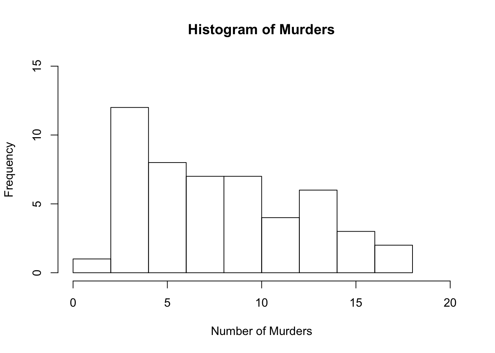
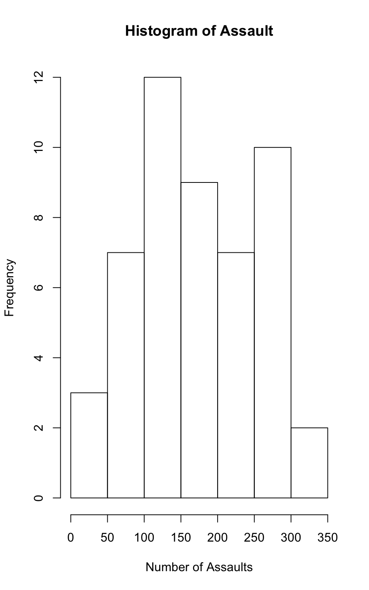
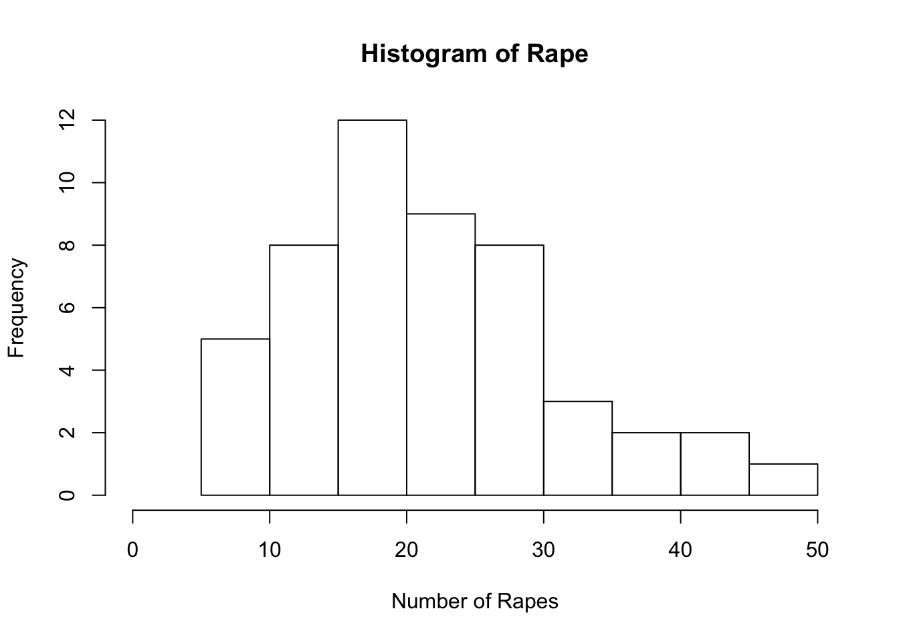
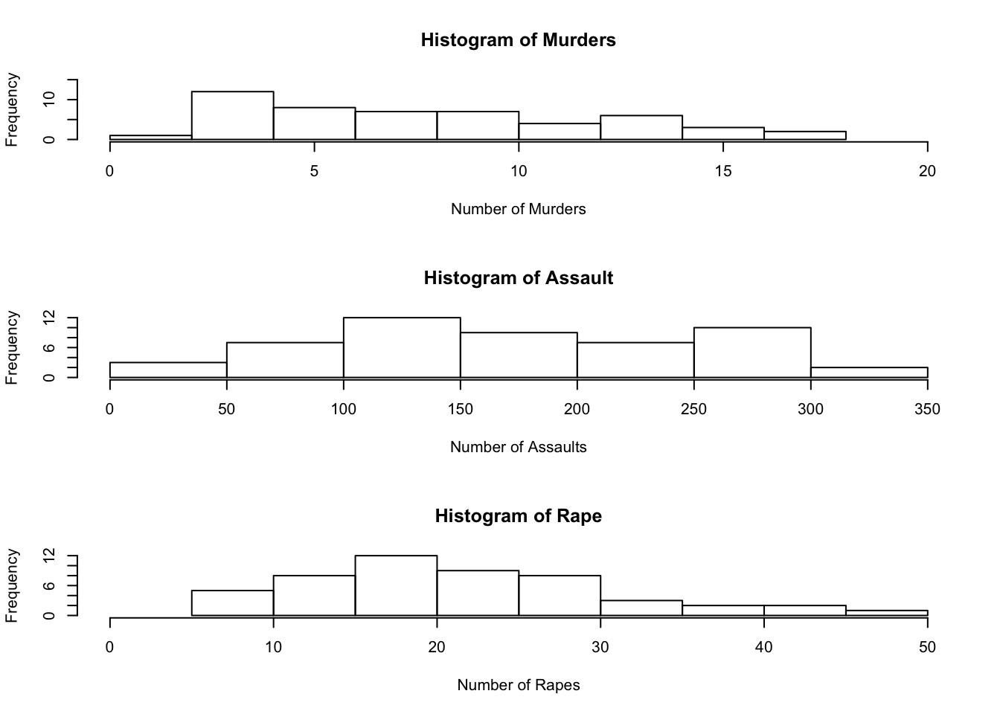

Collaborators: w/ Sophia Restaino
This assignment is due on Canvas on Monday 9/20 before class, at 10:15 am. Include the name of anyone with whom you collaborated at the top of the assignment.
Install the datasets package on the console below using install.packages("datasets"). Now load the library.
library(datasets)Load the USArrests dataset and rename it dat. Note that this dataset comes with R, in the package datasets, so there’s no need to load data from your computer. Why is it useful to rename the dataset?
dat <- USArrests
dat.untouched <- datIt is useful to rename the dataset so that you are able to keep track of your own datasets that you will be working with on your project. When working with many datasets, it might get confusing regarding which version of the data you are using (ie. if there is any manipulation to the data involved). Best practices involve making an untouched version so you can relook at the original data.
Use this command to make the state names into a new variable called State.
dat$state <- tolower(rownames(USArrests))This dataset has the state names as row names, so we just want to make them into a new variable. We also make them all lower case, because that will help us draw a map later - the map function requires the states to be lower case.
List the variables contained in the dataset USArrests.
colnames(dat)## [1] "Murder" "Assault" "UrbanPop" "Rape"What type of variable (from the DVB chapter) is Murder?
?USArrestsAnswer: Murder is a quantitative variable because it is a numerical value with units. It measures the number of murder arrests in each state (per 100,000) in 1973.
What R Type of variable is it?
class(dat$Murder)## [1] "numeric"Answer: The R type of variable is “numeric” as shown by the output of the code above.
What information is contained in this dataset, in general? What do the numbers mean?
Answer: This dataset is looking at the types of arrests in 1973 per 100,000 people in the 50 states. There are 50 rows (the states) and 4 main variables we are looking at, including murder, assault, urban population percentages, and rape arrests.
Draw a histogram of Murder with proper labels and title.
hist(dat$Murder,
main = "Histogram of Murders",
xlab = "Number of Murders",
ylab = "Frequency",
xlim = c(0,20),
ylim = c(0,15))
Please summarize Murder quantitatively. What are its mean and median? What is the difference between mean and median? What is a quartile, and why do you think R gives you the 1st Qu. and 3rd Qu.?
mean(dat$Murder)## [1] 7.788median(dat$Murder)## [1] 7.25summary(dat$Murder)## Min. 1st Qu. Median Mean 3rd Qu. Max.
## 0.800 4.075 7.250 7.788 11.250 17.400The mean shows the average amount of murders per 100,000 residents for each state. The median reports the number for the state that is in the middle of the other numbers in the dataset. Between the 1st quartile, median, 3rd quartile, and the max, we are able to see enough of the the data distribution that we need. 1st quartile shows that 25% of the state’s numbers reported are below 4.075 and the 3rd quartile shows that the 50.1%-75% are between 7.25-11.25.
Repeat the same steps you followed for Murder, for the variables Assault and Rape. Now plot all three histograms together. You can do this by using the command par(mfrow=c(3,1)) and then plotting each of the three.
max(dat$Assault)## [1] 337hist(dat$Assault,
main = "Histogram of Assault",
xlab = "Number of Assaults",
ylab = "Frequency",
xlim = c(0,350),
ylim = c(0,12))
max(dat$Rape)## [1] 46hist(dat$Rape,
main = "Histogram of Rape",
xlab = "Number of Rapes",
ylab = "Frequency",
xlim = c(0,50),
ylim = c(0,12))
What does the command par do, in your own words (you can look this up by asking R ?par)?
?parAnswer: Par allows you to set graphical parameters. An example of using par can be seen below in which I used par to put graphs together to be seen side by side. You can use it to put, for example, 3 side by side or 3 on top of each other.
What can you learn from plotting the histograms together?
par(mfrow=c(3,1))
hist(dat$Murder,
main = "Histogram of Murders",
xlab = "Number of Murders",
ylab = "Frequency",
xlim = c(0,20),
ylim = c(0,15))
hist(dat$Assault,
main = "Histogram of Assault",
xlab = "Number of Assaults",
ylab = "Frequency",
xlim = c(0,350),
ylim = c(0,12))
hist(dat$Rape,
main = "Histogram of Rape",
xlab = "Number of Rapes",
ylab = "Frequency",
xlim = c(0,50),
ylim = c(0,12))
Answer: You are able to compare the frequencies of the assaults, murders, and rape all togehter at once. It is an easy way to display the data.
In the console below (not in text), type install.packages("maps") and press Enter, and then type install.packages("ggplot2") and press Enter. This will install the packages so you can load the libraries.
Run this code:
library('maps')
library('ggplot2')
ggplot(dat,
aes(map_id=state, fill=Murder)) +
geom_map(map=map_data("state")) +
expand_limits(x=map_data("state")$long, y=map_data("state")$lat)What does this code do? Explain what each line is doing.
Answer: We are making a map with the murder data, plotting the different murder rates across each state. The first line of this code is calling the maps package. The second line calls the ggplot2 package which allows you to make different kinds of graphs, similar to baseR plot functions. So, when making the map, “ggplot” is the function, “dat” is the dataset we are pulling information from, and “aes” is responsible for setting the aesthetics of the map we are making. “fill” is telling R that we want the aesthetics to be filled with the data from the “Murder” column. After this, the “+” tacks on the map that is actually being made, using the “state” data. After this, “expand_limits” helps us put the latitude and longitude ticks on the visualization, behind the map.